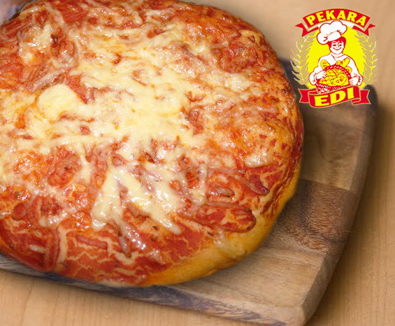
Slano
200 gPekara Edi peče od 1997. Kruh, peciva, bureci i kolači svaki su dan svježi u pet poslovnica u Nedeljancu, Varaždinu i Vidovcu.
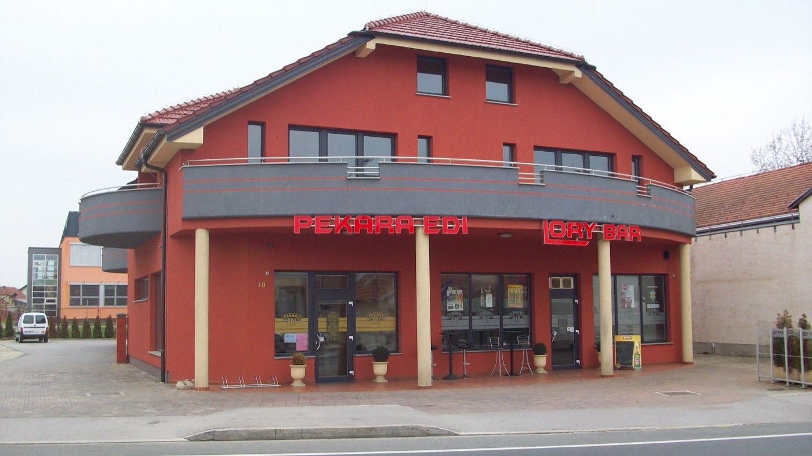



Filip je kao dječak šetao uz rijeku koja je dijelila njegovo selo od velikoga grada. Jednog ga je dana miris svježe pečenog kruha doveo do kolibe u kojoj je starac iz krušne peći vadio kruh boje zlata. „Dođi! Pokazat ću ti kako se pravi ovakav kruh!”
Filip je dolazio svaki dan i učio tajne pečenja kruha. S 16 godina otišao je u svijet i godinama radio u pekarnicama, dok nije ostvario dječački san: svoju pekaru.
Ako želite nešto stvoriti u životu, uvijek morate početi od malih stvari da bi se ostvarile velike.Iz priče o nastanku Pekare Edi
Filip otvara pekaru u obiteljskoj kući u Nedeljancu, s četiri djelatnika. Ime joj daje po sinu Eduardu, pa je tako nastala Pekara Edi.
Otvara se prodajno mjesto u Optujskoj ulici u Varaždinu.
Novo prodajno mjesto u Jalkovečkoj ulici. Posao napreduje.
Uz novo prodajno mjesto otvara se i caffe bar. Ime Lory dobio je po Filipovu drugom sinu, Lorencu.
Stariji sin Eduardo izučio je za pekara i krenuo tatinim stopama. Cilj je ostao isti: kvalitetni proizvodi i stalni razvoj.
Kruh za poslije je unaprijed plaćen kruh koji zatraži netko tko nema novaca da ga kupi. Pekara Edi sudjeluje u toj akciji.
Pekara Edi je među prvim manjim pekarskim tvrtkama u Varaždinu koje su uvele HACCP, sustav higijene i sigurnosti hrane prema međunarodnim normama.
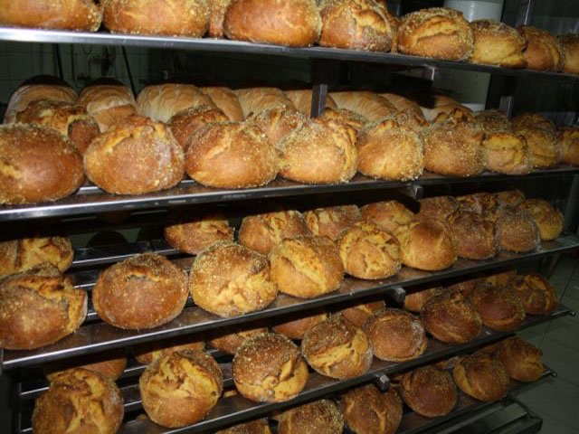

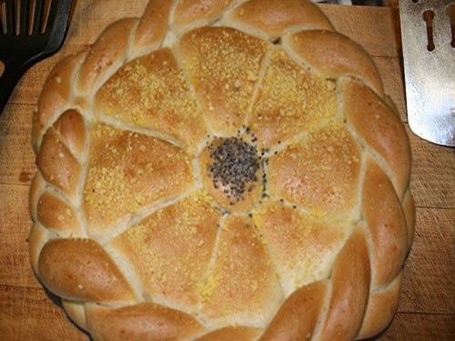
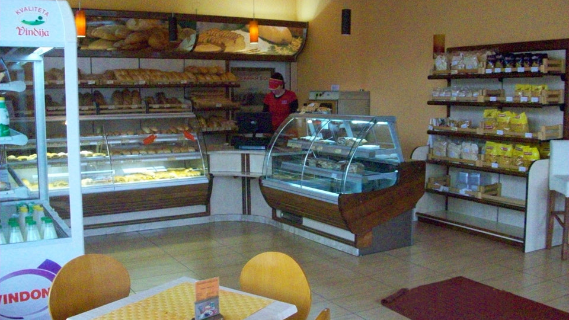
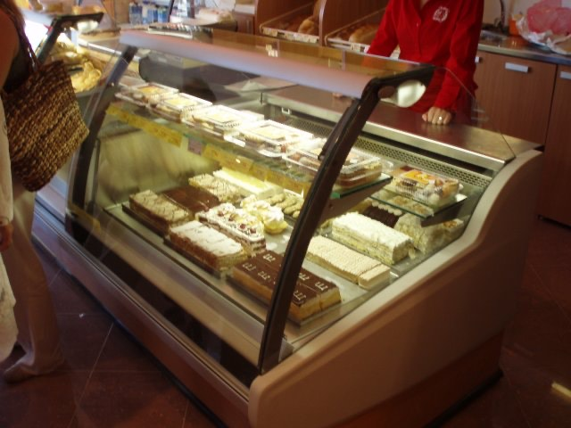
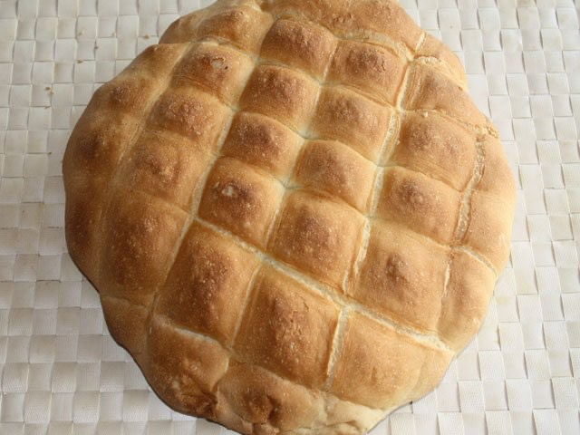
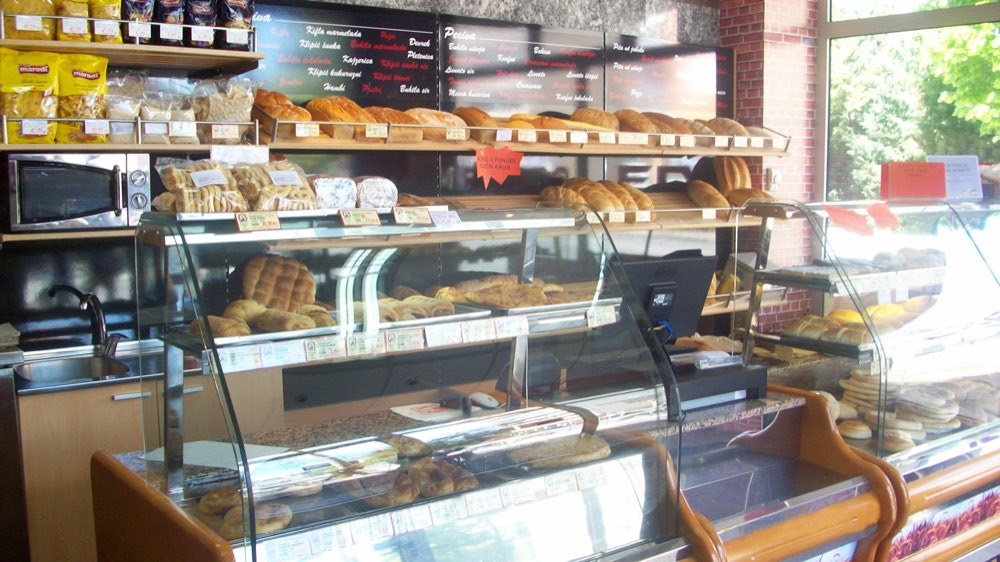
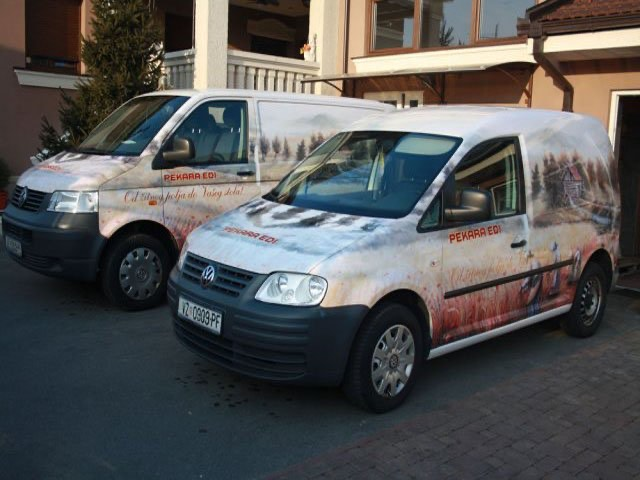
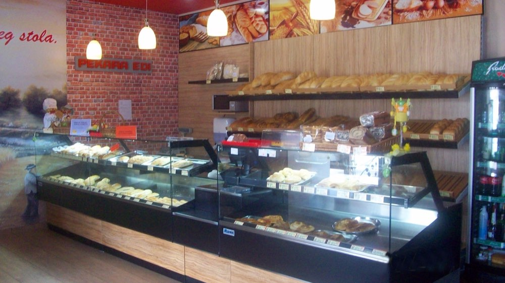
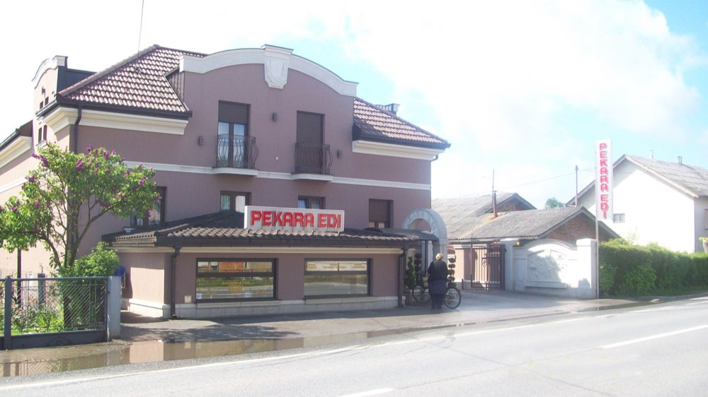
Prva pekara · 1997.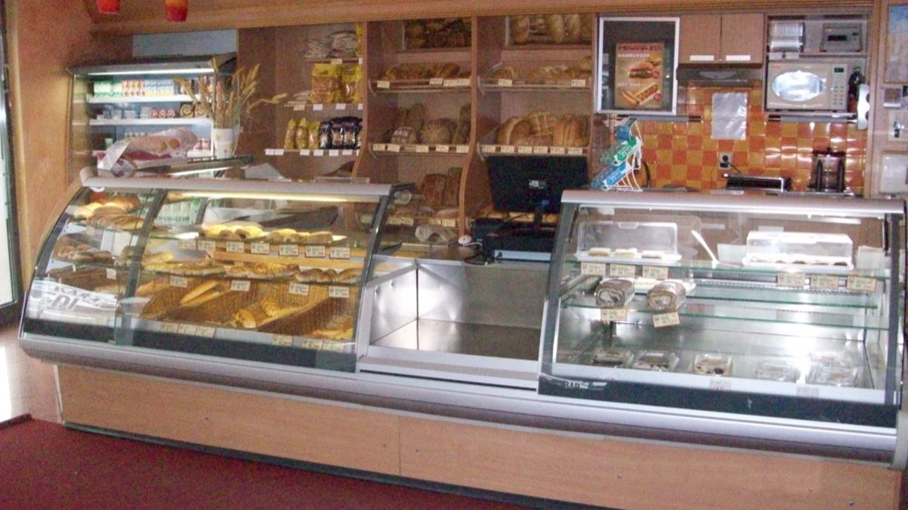
Pekara + Lory BarPet poslovnica: Nedeljanec (Varaždinska 207), Varaždin (Optujska 48, M. Krleže 1/1 i Anina 2) te Vidovec (Trg sv. Vida 19). Adrese, telefoni i radno vrijeme svake poslovnice su na stranici Poslovnice.
Poslovnice u Varaždinu i Vidovcu nedjeljom rade od 6 do 14 sati. Poslovnica u Nedeljancu radi dežurnim nedjeljama od 6 do 13 sati, a praznicima ne radi.
To je unaprijed plaćen kruh. Kad kupujete u Pekari Edi, možete platiti i jedan kruh više i ostaviti ga u pekari. Netko tko nema novaca pita imate li „kruh za poslije” i osoblje mu ga daje.
Lory Bar je caffe bar u sklopu Pekare Edi, u Optujskoj 48 i u ulici M. Krleže 1/1 u Varaždinu. Uz piće možete naručiti i proizvode iz pekare.
Da. Pekara Edi je među prvim manjim pekarskim tvrtkama u Varaždinu koje su uvele HACCP sustav sigurnosti hrane.
Svaka poslovnica ima svoj telefon. Poruku iz obrasca šaljete SMS-om izravno odabranoj poslovnici.